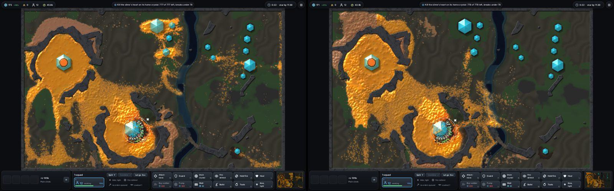
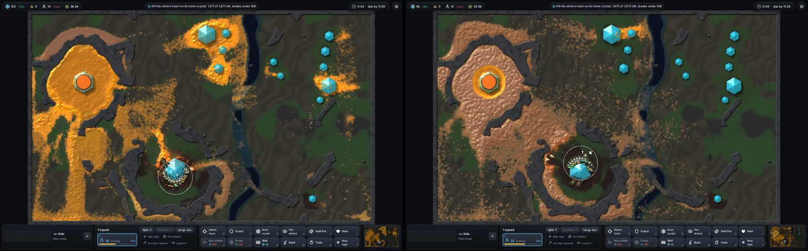

<title>Napping Swarmer</title>
<meta name="claude:viewport-fit-sides" content="cover">
<link rel="stylesheet" href="https://fonts.googleapis.com/css2?family=Space+Grotesk:wght@500;700&family=Inter:wght@400;600&family=JetBrains+Mono:wght@400&display=swap">
<style>
/* Layout: one reading column; each picture full width with its counts beside it in a small table. */
:root {
  --bg: #f6f3ec; --fg: #23211c; --muted: #6b665a; --line: #ddd6c6; --slime: #b86a00; --panel: #fffdf8;
  --display: "Space Grotesk", "Segoe UI", system-ui, sans-serif;
  --body: "Inter", "Segoe UI", system-ui, sans-serif;
  --mono: "JetBrains Mono", ui-monospace, monospace;
}
@media (prefers-color-scheme: dark) { :root:not([data-theme="light"]) { --bg: #17150f; --fg: #ece6d8; --muted: #a59d8b; --line: #3a352a; --slime: #f0a326; --panel: #1f1c15; color-scheme: dark } }
:root[data-theme="dark"] { --bg: #17150f; --fg: #ece6d8; --muted: #a59d8b; --line: #3a352a; --slime: #f0a326; --panel: #1f1c15; color-scheme: dark }
body { background: var(--bg); color: var(--fg); font: 15px/1.55 var(--body); }
main { max-width: 1320px; margin: 0 auto; padding-block: 28px 60px; padding-left: max(16px, env(safe-area-inset-left, 0px)); padding-right: max(16px, env(safe-area-inset-right, 0px)); display: grid; gap: 34px; }
h1, h2 { font-family: var(--display); text-wrap: balance; margin: 0; }
h1 { font-size: 2rem; }
h2 { font-size: 1.25rem; }
p { margin: 0; max-width: 68ch; }
.lede { display: grid; gap: 10px; }
.eyebrow { font: 12px var(--mono); letter-spacing: .06em; text-transform: uppercase; color: var(--slime); }
section { display: grid; gap: 12px; }
figure { margin: 0; display: grid; gap: 8px; }
figure img, figure video { width: 100%; max-width: 100%; height: auto; border-radius: 6px; background: #000; }
.pair-labels { display: grid; grid-template-columns: 1fr 1fr; font: 12px var(--mono); color: var(--muted); }
figcaption { color: var(--muted); font-size: 13px; max-width: 90ch; }
.tablewrap { overflow-x: auto; }
table { border-collapse: collapse; font-variant-numeric: tabular-nums; font-size: 13px; }
th, td { text-align: right; padding: 4px 12px; border-bottom: 1px solid var(--line); white-space: nowrap; }
th:first-child, td:first-child, th:nth-child(2), td:nth-child(2) { text-align: left; }
th { font-weight: 600; color: var(--muted); }
tr.on td { color: var(--slime); }
.rec { background: var(--panel); border: 1px solid var(--line); border-radius: 8px; padding: 16px 18px; display: grid; gap: 8px; }
code { font: 13px var(--mono); }
ul { margin: 0; padding-left: 20px; max-width: 80ch; }
</style>


<main>
  <div class="lede">
    <div class="eyebrow">Lab prototype · a lap-two pairing for planet 8 · not in the game</div>
    <h1>The Swarmer that naps</h1>
    <p>Enemy named planet 8 the weakest: it has no thing of its own and replays planet 5, 6 or 7. So it becomes a pairing, one tier carrying a second tier's trait. Here the Swarmer (planet 4: surges that charge from far off, a last-stand rush) carries the Sleeper's life cycle, with no new code, only the Sleeper's keys. It sleeps until shot, charges, and sleeps it off. Planet 4's map stands in for planet 8's. Left is the Swarmer, right is the pair, in every picture.</p>
  </div>

  <section>
    <h2>Seed 1, 0:00 to 3:00, the whole map</h2>
    <figure>
      <video src="nap-clip.mp4" controls muted loop playsinline autoplay></video>
      <div class="pair-labels"><span>Swarmer</span><span>Swarmer that naps</span></div>
      <figcaption>The run bot drains the biggest crystal and buys soldiers, bank 3,000. A frame every 3 game seconds. Pale crust is asleep; orange is awake.</figcaption>
    </figure>
    <figure>
      
      <div class="pair-labels"><span>0:22 · all awake</span><span>0:22 · 85% awake, a wave</span></div>
    </figure>
    <figure>
      
      <div class="pair-labels"><span>0:43 · all awake</span><span>0:43 · 13% awake, asleep again</span></div>
    </figure>
  </section>

  <section>
    <h2>The counts</h2>
    <div class="tablewrap">
      <table>
        <thead><tr><th>Seed</th><th>Arm</th><th>Waves of waking</th><th>Soldiers at 3:00</th><th>Shots</th><th>Killed</th><th>Slime at 3:00</th></tr></thead>
        <tbody>
          <tr><td>1</td><td>Swarmer</td><td>always awake</td><td>38</td><td>4,164</td><td>32,174</td><td>30,929</td></tr>
          <tr class="on"><td>1</td><td>naps</td><td>0:18, 0:50, 1:56</td><td>43</td><td>2,569</td><td>25,912</td><td>25,296</td></tr>
          <tr><td>2</td><td>Swarmer</td><td>always awake</td><td>37</td><td>3,017</td><td>42,453</td><td>60,208</td></tr>
          <tr class="on"><td>2</td><td>naps</td><td>0:21, 1:42</td><td>37</td><td>2,372</td><td>43,004</td><td>43,002</td></tr>
        </tbody>
      </table>
    </div>
    <p>A wave is over half the walkers awake after under 30%. A farm (seed 1, four soldiers pumping): the Swarmer's surges found it and wiped it at 1:43; the pair slept through it to 2:00 with 6 shots fired, woke at 2:04 and wiped it at 2:42. As tuned here the pair is a little easier than the Swarmer alone.</p>
  </section>

  <section>
    <h2>Trait keys that fight each other</h2>
    <ul>
      <li><b>Sleepers don't move.</b> Surges, raids and the last stand move only the awake. The last stand counts sleepers and fires once, so half asleep, half rushes.</li>
      <li><b>One alarm field.</b> The Sleeper's wake, the Sporer's burst, the Swarmer's and Grudge's steering and the Sprawler's fire all use it, and the Sleeper's relay spreads it: a Sporer that naps would burst into spores at one shot.</li>
      <li><b>One life-cycle timer.</b> Fruiting is checked before dozing, so a Sporer that naps fruits first.</li>
      <li><b>One scar field</b> for the Grudge's pull and scar tissue.</li>
      <li><b>One walk per slime</b> (trail kept, sensor reach): two walks cancel; a pair picks one.</li>
    </ul>
  </section>

  <section class="rec">
    <div class="eyebrow">Recommendation</div>
    <p><b>Make planet 8 a pairing; the Swarmer that naps works as a first.</b> Card: "It sleeps off every charge. Each shot wakes it, and awake it charges." A pair is both tiers' settings and both run rows.</p>
    <ul>
      <li>Enemy sets the pair's numbers by play on planet 8's own map (here it is easier than the Swarmer alone).</li>
      <li>Direction picks lap two's pairs; the list above says which multiply and which cancel.</li>
      <li>The Sleeper's growth asleep would carry over and make the naps cost the player too (untested together).</li>
    </ul>
    <p>Report: <code>Reports/lab-pairing-2026-11-24/README.md</code>. Engine keys only, on the lab branch.</p>
  </section>
</main>
